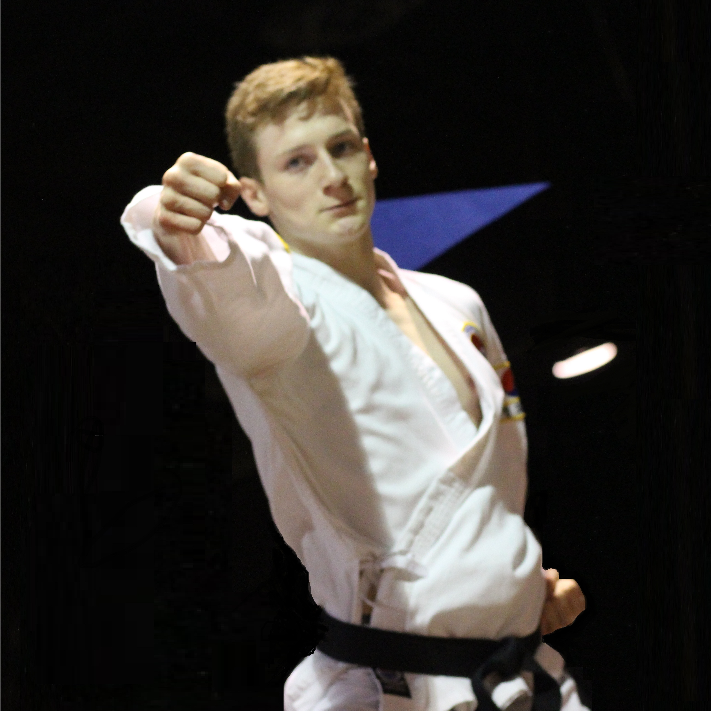
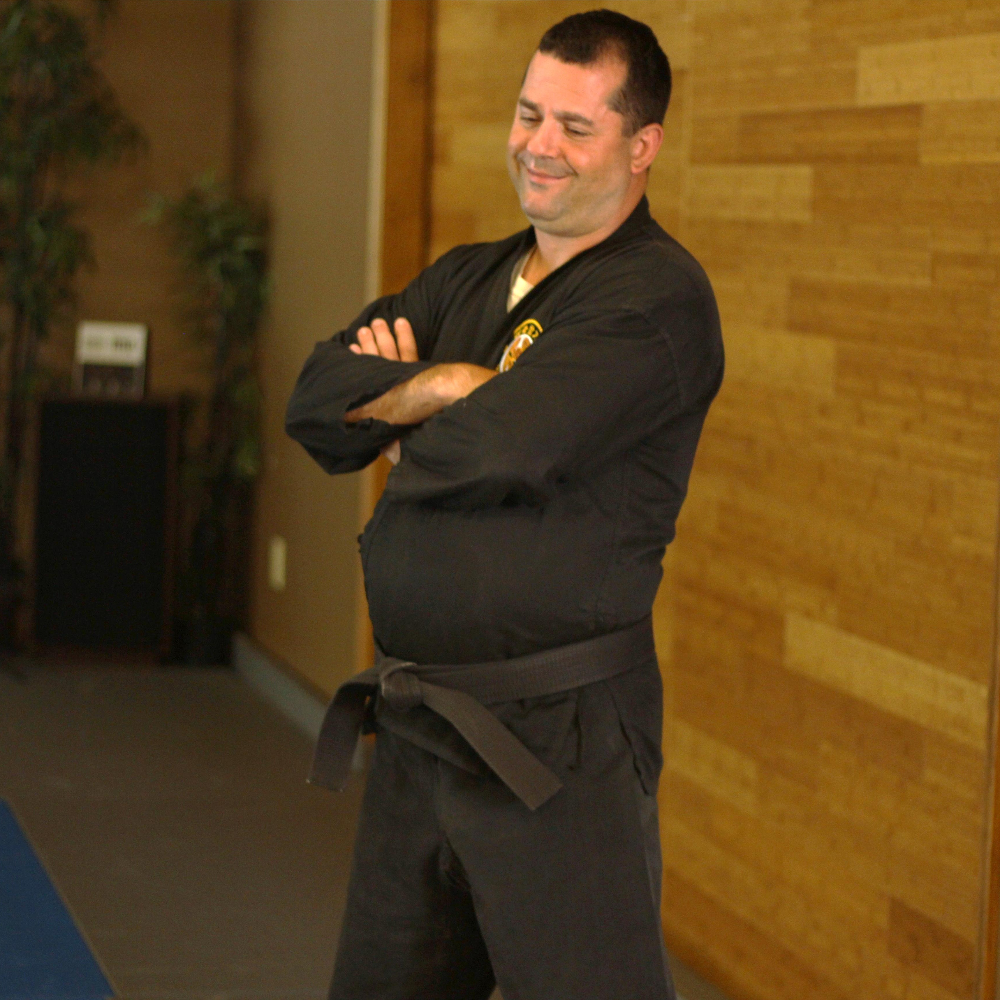
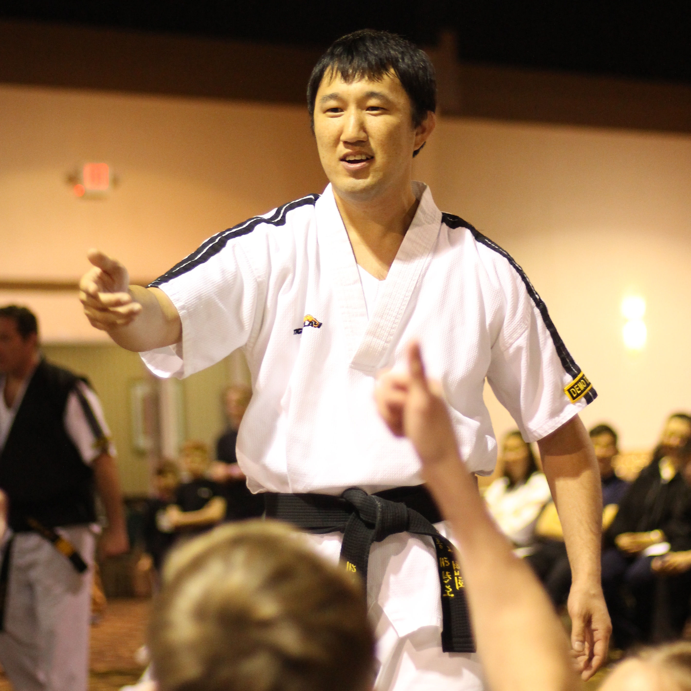

Megan Gens
Junior Instructor, Little Dragons
Ms. Megan Gens has studied Tae Kwon Do at GMA for the past 8 years, and was recently honored with a promotion to 2nd Degree Black Belt. Megan is also a member of GMA’s Black Belt Club, Demo Team, and Leadership Team. In addition to
studying Tae Kwon Do, Ms. Gens is proud to be a straight A student and a talented member of her school’s choir. Megan is a joyful and kind young lady who leads by example and teaches our Little Dragons not only how to execute a perfect
roundhouse, but how to have strong character and morals.

Noah Wilson
Junior Instructor, Little Dragons
Mr. Noah Wilson started his martial arts journey at GMA when he was only four years old as a Little Dragon. He progressed through the ranks to Tae Kwon Do, and currently holds a 3rd Degree Black Belt. Noah is also a member of GMA’s
Black Belt Club, Demo Team, and Leadership Team. In addition to Tae Kwon Do, Noah holds a blue belt in Brazilian Jiu Jitsu. Mr. Wilson consistently places highly in tournaments for both arts. Academically Noah has unfailingly applied himself,
reaching academic excellence at the top ten percent of his class. Noah’s style of instruction makes him an ideal teacher for our Little Dragons. His good humor, patience, and high standards create an environment where children feel comfortable
and have fun while instilling a genuine desire to learn and succeed.

Brandon Sieg
Head Instructor, Tae Kwon Do, Brazilian Jiu Jitsu, Stickfighting, FAST, Tai Chi
Brandon Sieg is honored to practice and hold rank in a wide variety of martial arts. He has a 6th degree and 4th degree black belt in TKD (Chung Do Kwan and Kukkiwon), a brown belt in Brazilian Jiu Jitsu under Andre Galvao’s Team ATOS,
and a 6th and 5th degree black belt in Hapkido (KHF and USHF). Brandon is also a certified instructor in FAST Defense, Chinna (Chinese joint locking under Dr. Yang Jwing Ming), and Tai Chi Ch’uan (New School Tai Chi and William CC Chen).
Brandon is also an Apprentice Elite Instructor in Martial Concepts. In addition to being the head instructor at GMA, Mr. Sieg is on staff at both Indiana University and DePauw University where he teaches martial arts and self-defense classes.
Brandon’s professional experience is widely versatile, including technical consultation for kickboxing programs, teaching physical therapists Tai Chi exercises for the elderly, training SWAT team members in combatives, and working with
stalking victims to learn incredibly necessary self-defense. Brandon has also been an expert witness in self-defense and martial arts legal cases and is Vice President of the USHF. Mr. Sieg's formal education includes a Masters in Kinesiology
(Sport Management emphasis), a BS in biology, and a minor in East Asian Language and Culture. Mr. Sieg tries to educate beyond his classes by writing. He is the author of “Drops Against the Stone” and has been published in the Journal
of Asian Martial Arts, Martial Arts Success, and other trade publications.

Todd Miller
Primary Instructor, Little Dragons, Hap Ki Do, FAST
Todd Miller started his martial arts career in 1998 with Hapkido at Indiana University (Bloomington). During his martial arts career he has achieved his 5th degree Black Belt in Hapkido under the United States Hapkido Federation. Todd
also has a Black Belt in Tae Kwon Do and a Master Instructor Certification for FAST Defense. He has practiced many other martial arts that include Thai Boxing, Western Boxing, Tae Kwon Do, Judo, Brazilian Jiu Jitsu, Filipino martial arts,
and Penjak Silat. Todd was honored to receive an appointment as President of the Board of Examiners for the USHF. He is also part owner of Gentry Martial Arts Martinsville Inc., and is currently on staff at IU's School of Public Heath
in the Department of Kinesiology as an instructor in their Martial Arts Department. Todd is currently focusing his efforts on the FAST Defense Global Instructor Development team. Todd loves seeing the changes FAST Defense can make in a
person’s life in just a short amount of time. He has seen FAST help students breakthrough with some truly wonderful and deeply personal transformations. FAST Defense’s anti-bullying course is the one that Todd is the most passionate about.
He is currently developing Bystander Intervention Training for FAST Defense Global. As an Instructor at GMA, Mr. Miller's duties include not only leading classes and seminars whenever called upon, but also continually studying and developing
his skills to ultimately become the best instructor he can be.

David Yoshida
Instructor, Tae Kwon Do
David Yoshida has a 4th and 3rd degree black belt in Tae Kwon Do (TTCA and Kukkiwon), two 3rd degree black belts in Hapkido (KHF and USHF), a blue belt in Brazilian Jiu Jitsu, and has a strong background in freestyle wrestling. He
is also a certified member of our FAST Defense team. As one of GMA’s most senior students, he has assisted both at DePaw University and Martinsville. Appearing in martial arts movies and commercials, Mr. Yoshida is lead choreographer for
the GMA Demo Team.
Mandy Yoshida
Instructor, Tae Kwon Do
Mandy Yoshida has over 20 years in martial arts experience, with a 4th and 3rd degree black belt in Tae Kwon Do and a black belt in Hapkido. She is also a certified member of our FAST team.
Mike Dodge
Instructor, Kid's Brazilian Jiu Jitsu, Brazilian Jiu Jitsu